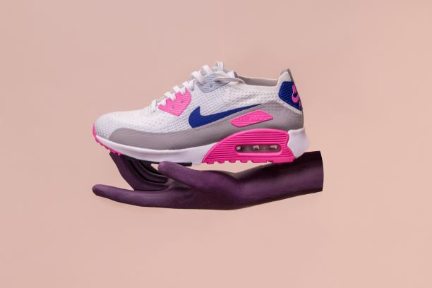

Specials available in our shops...

Pizza at half price at the piza shop in the mall. Find the pizza shop at the centre of the mall at the food court opposite Macdonalds.In Italy, pizza served in formal settings, such as at a restaurant, is presented unsliced, and is eaten with the use of a knife and fork.In casual settings, however, it is cut into wedges to be eaten while held in the hand.

There are smart phones on special at our electronic shops in the mall. The smart phones are the cheapest around.Mobile phones in the 1950s through 1970s were large and heavy, and most were built into cars. In the late 20th century technology improved so people could carry their phones easily.
Although Dr. Martin Cooper from Motorola made the first call using a mobile phone in 1973 (using a handset weighing 2 kilograms), it did not use the type of cellular mobile phone network that we use today.Todays phones are much cheaper and lighter.

The Stone Patch company is running a special on nike shoes.30% off on all nike shoes available in store.A shoe is an item of footwear intended to protect and comfort the human foot. Shoes are also used as an item of decoration and fashion. The design of shoes has varied enormously through time and from culture to culture, with appearance originally being tied to function. Though the human foot is adapted to varied terrain and climate conditions, it is still vulnerable to environmental hazards such as sharp rocks and temperature extremes, which shoes protect against. Some shoes are worn as safety equipment, such as steel-soled boots which are required on construction sites.